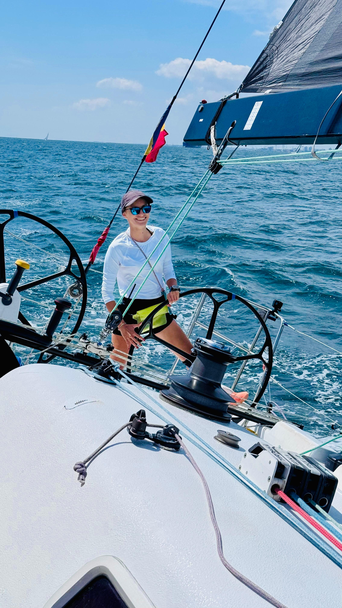

Co-fondator · Skipper & Instructor
Andreea Matache
Peste 12 ani de experiență maritimă și mai bine de 20.000 de mile nautice în offshore. A doua româncă care a traversat Atlanticul pe un velier sub pavilion românesc.
A fost skipper și instructor la SetSail Navigation School, unde a coordonat evenimente la bord pentru grupuri de până la 350 de persoane — teambuilding-uri corporate, regate și petreceri private de-a lungul litoralului românesc. La TOA aduce expertiza ei de leadership maritim și știința de a construi medii de dezvoltare structurate, cu siguranță fără compromis.